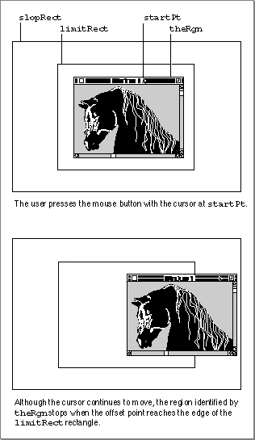

DragGrayRgn
TheDragWindowfunction calls theDragGrayRgnfunction to move an outline of a window around the screen as the user drags a window.FUNCTION DragGrayRgn (theRgn: RgnHandle; startPt: Point; limitRect, slopRect: Rect; axis: Integer; actionProc: ProcPtr): LongInt;
- theRgn
- A handle to the region to be dragged.
- startPt
- The location, in the local coordinates of the current graphics port, of the cursor when the mouse button was pressed.
- limitRect
- A rectangle, in the local coordinates of the current graphics port, that limits where the region can be dragged. This parameter works in conjunction with the
slopRectparameter, as illustrated in Figure 4-23 on page 4-90.slopRect- A rectangle, in the local coordinates of the current graphics port, that gives the user some leeway in moving the mouse without violating
the limits of thelimitRectparameter, as illustrated in Figure 4-23 on page 4-90. TheslopRectrectangle should be larger than thelimitRectrectangle.axis- A constant that constrains the region's motion. The
axisparameter can have one of these values:CONST noConstraint = 0; {no constraints} hAxisOnly = 1; {move on horizontal axis } { only} vAxisOnly = 2; {move on vertical axis } { only}
- If an axis constraint is in effect, the outline follows the cursor's movements along only the specified axis, ignoring motion along the other axis. With or without an axis constraint, the outline appears only when the mouse is inside the
slopRectrectangle.actionProc- A pointer to a procedure that defines an action to be performed repeatedly as long as the user holds down the mouse button. The procedure can have no parameters. If the value of
actionProcisNIL,DragGrayRgnsimply retains control until the mouse button is released.DESCRIPTION
TheDragGrayRgnfunction moves a gray outline of a region on the screen, following the movements of the cursor, until the mouse button is released. It returns the difference between the point where the mouse button was pressed and the offset point--that is, the point in the region whose horizontal and vertical offsets from the upper-left corner of the region's enclosing rectangle are the same as the offsets of the starting point when the user pressed the mouse button. TheDragGrayRgnfunction stores the vertical difference between the starting point and the offset point in the high-order word of the return value and the horizontal difference in the low-order word.The
DragGrayRgnfunction limits the movement of the region according to the constraints set by thelimitRectandslopRectparameters:Figure 4-23 on page 4-90 illustrates how the region stops moving when the offset point reaches the edge of the
- As long as the cursor is inside the
limitRectrectangle, the region's outline follows it normally. If the mouse button is released while the cursor is within this rectangle, the return value reflects the simple distance that the cursor moved in each dimension.- When the cursor moves outside the
limitRectrectangle, the offset point stops at the edge of thelimitRectrectangle. If the mouse button is released while the cursor
is outside thelimitRectrectangle but inside theslopRectrectangle, the return value reflects only the difference between the starting point and the offset point, regardless of how far outside of thelimitRectrectangle the cursor may have moved. (Note that part of the region can fall outside thelimitRectrectangle, but not the offset point.)- When the cursor moves outside the
slopRectrectangle, the region's outline disappears from the screen. TheDragGrayRgnfunction continues to track the cursor, however, and if the cursor moves back into theslopRectrectangle, the outline reappears. If the mouse button is released while the cursor is outside theslopRectrectangle, both words of the return value are set to $8000. In this case, the Window Manager does not move the window from its original location.limitRectrectangle. The cursor continues to move, but the region does not.If the mouse button is released while the cursor is anywhere inside the
slopRectrectangle, the Window Manager redraws the window in its new location, which is calculated from the value returned byDragGrayRgn.Figure 4-23 Limiting rectangle used by
DragGrayRgn
ASSEMBLY-LANGUAGE INFORMATION
You can set the global variableDragHook to point to an optional procedure, definedas long as the mouse
by your application, which will be called by DragGrayRgn
button is held down. (If there's anactionProcprocedure, it is called first.) If you
wantDragGrayRgnto draw the region's outline in a pattern other than gray, you
can store the pattern in the global variableDragPatternand then invoke the macro_DragTheRgn. Note that the use of the Window Manager's global variables is not guaranteed to be compatible with system software versions later than System 6.